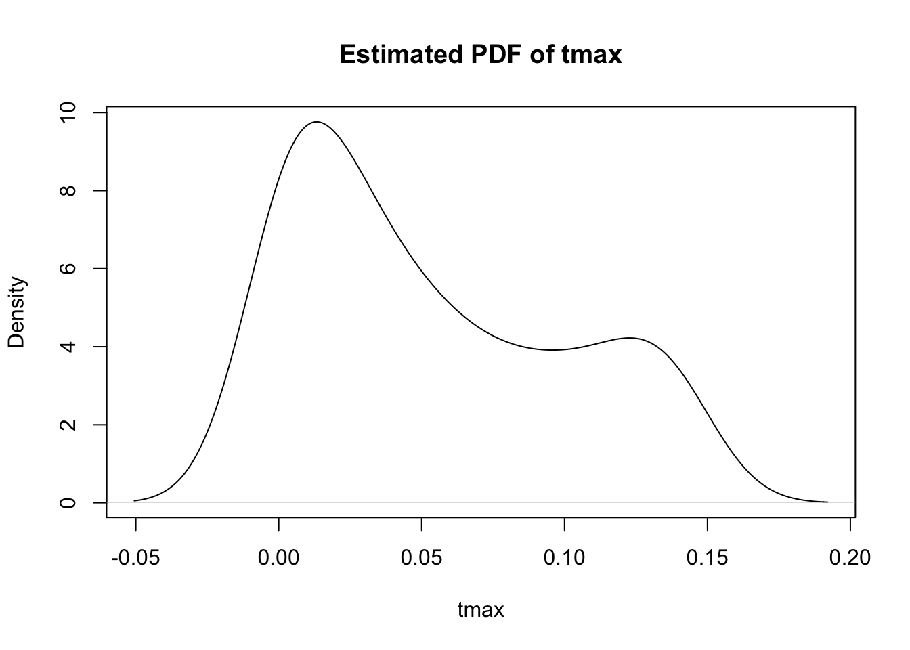

bnn_predict <- function(model, x_new, n_sample = 1000) {
model$train() # set to training mode to get dropout samples
preds <- torch_stack(lapply(seq_len(n_sample), function(i) {
model(x_new)$squeeze()
}), dim = 2) # shape: [n_new, n_sample]
list(
mean = preds$mean(dim = 2), # shape: [n_new]
std = preds$std(dim = 2)
)
}University of Arkansas STAT6393V - Week 4
Week 4 - Assignment 4: Estimating Australia Electricity Demand
Introduction
This assignment contains 2 different questions. Question 1 is optional. Question 2 is required, since it is a primer for the final project.
1. Getting UQ based on empirical quantiles The bnn_predict function in the Bayes by backprop section looked like this:
In its first stage, it returns a tensor whose dimensions are n_test x n_samples. It then takes the mean and SD over the n_samples to return a tensor whose dimensions are n_test x 2. The idea is that 𝜇 ± 2𝜎 contains 95% of all the data.
Instead, we want to get the empirical 95% quantile. Do the following for the noisy sine example:
- Make the function return a tensor whose dimensions are n_test x n_samples
- Convert it into a matrix
- Calculate quantiles for each n_test. One way to do this is via the following command: apply(preds,1,quantile, c(0.05,0.95))
- Check the proportion of n_test points where these new intervals are wider than the 𝜇 ± 2𝜎 intervals.
- Submit your code for just the modified prediction function, and how you did your calculations for question #4, and also your result.
2. Getting UQ based on quantiles of the predictive distribution The bnn_predict function in the Bayes by backprop section looked like this:
- Load up the weather data and subset July and location 1
weather <- weather [weather$month == 7 & weather$location == 1,]Keep tmax as 𝑌 and pr as 𝑋. The remainder of the covariates are the same for the remaining data points, so point in using them. 2. Fit an SPQR model on 𝑌 ∼ 𝑋 using MLE. (no need for a train-test split) 3. Simulate a bunch of precipitation values. You can get the range of all precipitation values by using range function, and then generate naybe 10000 values over the range using the runif function. For example, if the range is (0, 32), you can do runit(10000, 0, 32). 4. Put all the pr values in an X_test matrix. Use the predict function to predict the PDF for Y for each X. This matrix would have dimensions 10000 x 101. Save this in a matrix called preds, for example. 5. Use the apply function to compress this to a 1 x 101 matrix (or vector) This is equivalent to having averaged out X (since you have genrated all possible values of X) to get the unconditional distribution of tmax. The code will look something like
ypdf <- apply(preds, 2, mean)- Plot this PDF using plot(density(ypdf)). Submit the plot of the PDF.
[Hint:] You can take a look at this workbook (you will need to download the file before viewing it) for an example. The code there is written in keras, but it is doing the exact same thing otherwise.
Answer 1
knitr::opts_chunk$set(echo = TRUE)
library(cito)
library(torch)
source('BNN_layers.R')
weather <- readRDS("weather.RDS")
library(lubridate)
Attaching package: 'lubridate'The following objects are masked from 'package:base':
date, intersect, setdiff, unionlibrary(SPQR)
set.seed(303)(Ignore for now, just playing around)
#Noisy Sine Model
n <- 300
x_data <- torch_linspace(-3, 3, n)$unsqueeze(2)
y_data <- torch_sin(x_data) + torch_randn(n, 1) * 0.2
#Hidden Variables
input_dim <- 1
hidden_dim <- 64
output_dim <- 1
n_epochs <- 500
lr <- 1e-3
# Define model
model <- BayesianNN(input_dim, hidden_dim, output_dim, prior_sigma = 1.0)
control = list(hidden_dim = hidden_dim, n_epochs = n_epochs, lr = lr)
# Fit model
model.fitted <- bnn_fit(X = x_data, Y = y_data, model = model, control = control)
x_test <- torch_linspace(-4, 4, 200)$unsqueeze(2)
result <- bnn_predict(model.fitted, x_test, n_samples = 200)#Make a function return a tensor
bnn_predict_Q1 <- function(model, x_new, n_samples = 100) {
model$train() # keep dropout/sampling active
preds <- torch_stack(lapply(seq_len(n_samples), function(i) {
model(x_new)$squeeze()
}), dim = 2)
#Make it a matrix
preds <- as.array(preds)
#Calculate quantiles for each n_test
apply(preds,1,quantile, c(0.05,0.95))
}result2 <- bnn_predict_Q1(model.fitted, x_test, n_samples = 200)
Answer 2
1. Load the weather data and subset July and location 1:
- Load the weather data:
weather <- weather[weather$month == 7 & weather$loc == 1,] - Set tmax as Y:
Y = weather$tmax- Set pr as X, and convert X to a matrix:
X = as.matrix(weather$pr, ncol = 1)2. Fit SPQR model using MLE:
model.mle <- SPQR(Y = Y, X = X, method = 'MLE', normalize = T)Loss at epoch 1: training: 10.181127, validation: -9.227557
Loss at epoch 10: training: -80.229993, validation: -66.606832
Loss at epoch 20: training: -85.580260, validation: -71.430935
Loss at epoch 30: training: -86.244147, validation: -72.697448
Loss at epoch 40: training: -86.819985, validation: -73.189561
Loss at epoch 50: training: -87.212982, validation: -74.163430
Loss at epoch 60: training: -87.379516, validation: -74.431845
Loss at epoch 70: training: -87.521629, validation: -74.086059
Loss at epoch 80: training: -87.707417, validation: -74.577424
Stopping... Best epoch: 88
Final loss: training: -87.715564, validation: -74.7703913. Simulate precipitation values:
precip_range <- range(weather$pr) # Get the range of precipitation values
precip_sim <- runif(10000, min = precip_range[1], max = precip_range[2]) # Simulate 10000 precipitation values
precip_range[1] 0.00000 31.20196#precip_range[1]
#precip_range[2]The ‘precip_range[1]’ and ‘precip_range[2]’ give us the minimum and maximum precipitation values from the weather dataset, respectively, which are used as the extremes for the uniform distribution in the ‘runif’ function.
Looking at the range of precipitation values, we can see that they vary from 0 to approximately 32. This means that our simulated precipitation values will also fall within this range, allowing us to explore the relationship between precipitation and maximum temperature (tmax) effectively.
4. Put all the pr values in an X_test matrix and predict the PDF for tmax:
- Put real precipitation values in X_test matrix:
X_test <- as.matrix(weather$pr, ncol = 1)- Use the predict function to predict the PDF for Y for each X. This matrix would have dimensions 10000 x 101. Save this in a matrix called preds, for example.
preds <- predict(model.mle, X = as.matrix(precip_sim, ncol = 1), type = 'PDF')
dim(preds) # Check dimensions of preds[1] 10000 1015. Use the apply function to compress this to a 1 x 101 matrix (or vector) This is equivalent to having averaged out X (since you have generated all possible values of X) to get the unconditional distribution of tmax. The code will look something like:
ypdf <- apply(preds, 2, mean) # Average the predictions to get the unconditional distribution of tmax6. Plot this PDF using plot(density(ypdf)).
plot(density(ypdf), main = "Estimated PDF of tmax", xlab = "tmax", ylab = "Density") # Plot the PDF of tmax
@@@@@@@@@@@
#Predict Precipitation
precippred <- runif(1000, min = 0, max = 100) # Simulate 1000 precipitation values between 0 and 100
var <- predict(model.mle, X = as.matrix(precippred, ncol = 1), type = 'PDF') # Predict the PDF for tmax based on the simulated precipitation values
var <- apply(var, 2, mean) # Average the predictions to get the unconditional distribution of tmax
plot(density(var)) # Plot the PDF of tmax based on the simulated precipitation values#Put em in an X-test matrix
X_test <- X
plotEstimator(model.mle, X = as.matrix(X_test[1,]), type = 'PDF')preds <- as.matrix(predict(model.mle, X_test, ncol = 1), type = 'PDF')
dim(preds) # Check dimensions of preds[1] 1984 9preds <- predict(model.mle, X = as.matrix(X_test, ncol = 1), type = 'PDF')
dim(preds) # Check dimensions of preds[1] 1984 101